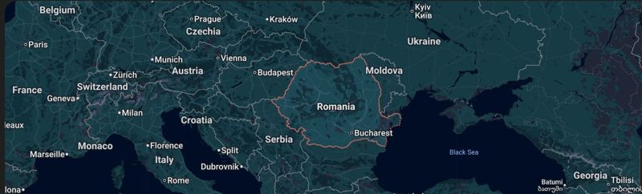
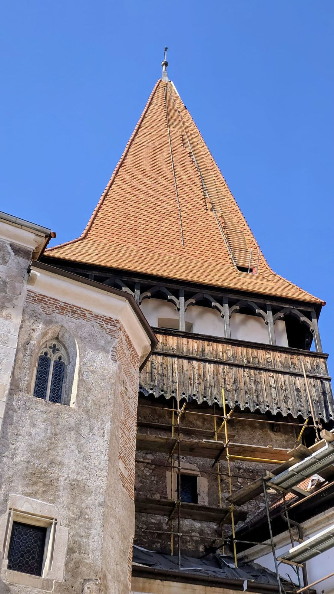
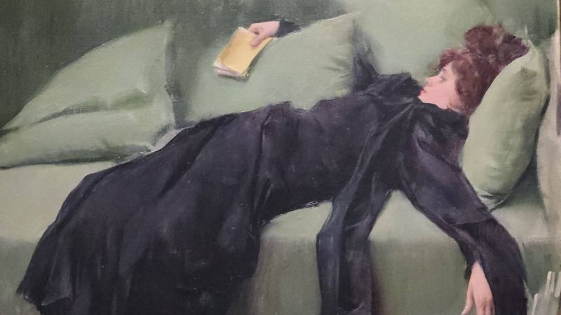
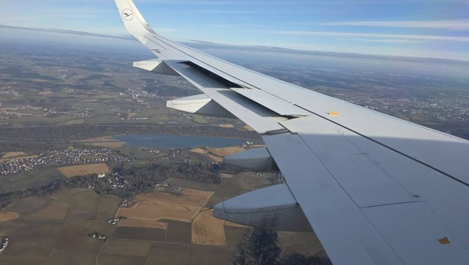
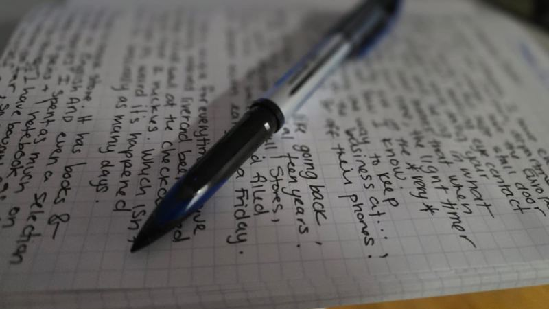
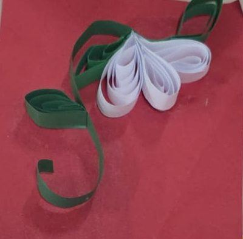
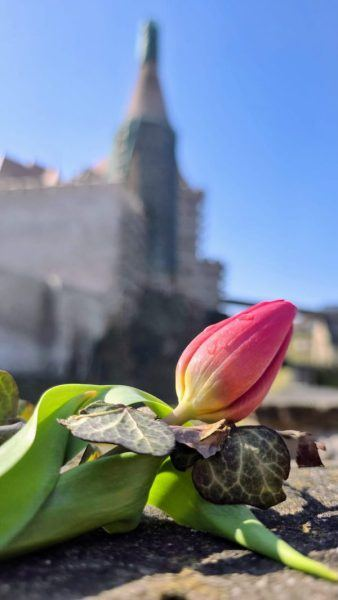
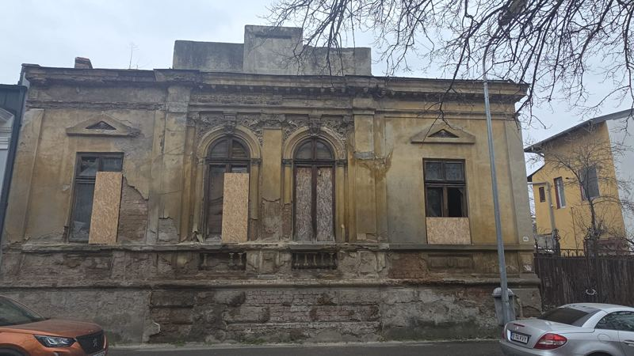
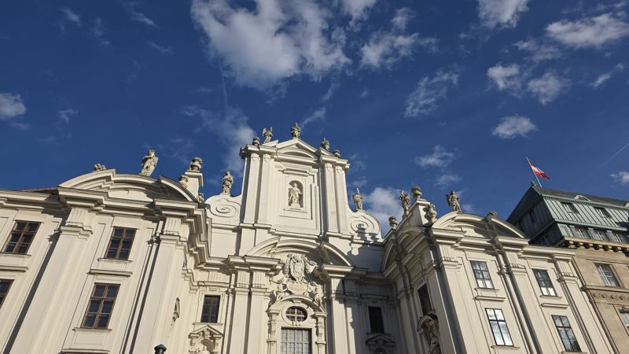
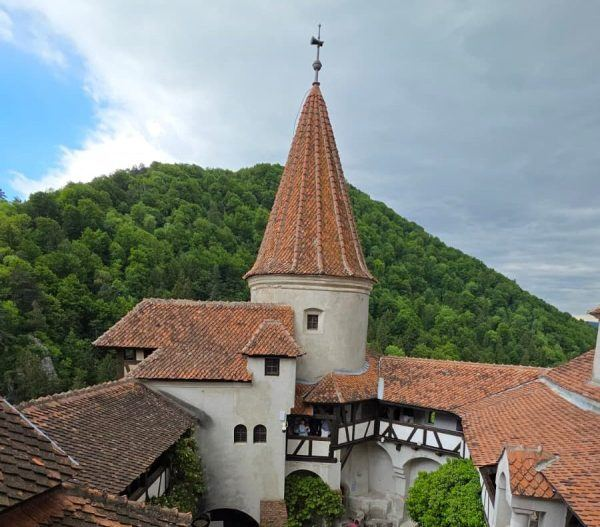

A Year in the Making: Saying Yes to Romania The backstory of applying to Erasmus a year earlier, while one part of my brain kept asking "who do I think I am?" It ends on the eve of departure, excited and uneasy about a season of not being the expert.Spring 2026 · Erasmus+ · West University of Timișoara
A home for my field notes.
Stories and observations from Romania and beyond. Honest reflections on transition, identity, and learning, and on what leadership looks like in the real world.

Start here
The first four notes, written in the week I left

The Leaving, the Layover… The hardest part of leaving was my family, not the luggage, including a week of trying to turn "mom" into a checklist. A layover in Amsterdam dropped me into a Lunar New Year celebration that felt like permission to be delighted.
…and the Landing Arriving in Timișoara brought travel fog, the humility of the language barrier, and an airport that reminded me of Saipan. The dorm was a shock: not cozy, not home, and up several flights of stairs with 130 pounds of luggage.
Day One I turned panic into a shopping checklist and learned that "walkable" means something different in Romania. By the end the room felt livable and I felt capable, if not settled.The route
7 journeys · 57 field notes · Feb to Jun 2026

Timișoara Leaving home, landing in Romania, and learning the city one coffee, menu and Mărțișor charm at a time.
Hunedoara A castle, its legends and its stairs, and the small town that turned out to be more than its headline attraction.
București An overnight train to the capital, a city shaped by communism and the 1977 earthquake, and one very long spa day.
Wien Traveling without a plan for once: white horses, a wrong turn on Easter, and three floors of the Belvedere. Kraków
A cancelled tour that became a private one, and the city's dragon, bugler and enchanted pigeons.
Kraków
A cancelled tour that became a private one, and the city's dragon, bugler and enchanted pigeons.
 Firenze
Field notes from a week-long women's leadership conference with Gonzaga in Florence.
Firenze
Field notes from a week-long women's leadership conference with Gonzaga in Florence.

Romania Visa offices, a salt mine, Seat 41, the people of the semester, and finally Bran Castle.Ongoing series
Folktales, retold where I heard them
Legends from the places I visited, told the way they were told to me.
6 posts
Chronicles of
The history underneath the view
Hunyadi, Vlad III, communism, and the city that was rebuilt after the earthquake.
5 posts
Leadership notes
Leadership, ethics and systems
The posts where travel turned into thinking about leadership, care, power and governance.
15 posts
Latest field notes
- Which Castle Are You Visiting?Bran Castle turns out to be several castles at once: the Dracula souvenir economy, Queen Marie's home, the folklore, and Vlad's. A bookend to the Corvin Castle post, ending on hearts carved into doors.
- Trebuie să AșteptMonths of immigration-office visits with no status updates or progress bar. My Romanian test phrase finally fits: "I must wait" for a residence card that already exists somewhere in the building.
- Stories of Romania: VignettesShort portraits of people from the semester: the librarian who was my first friend, a teacher, a taxi driver, coffee-shop regulars, and "Luca." I circled the word "earnestness" to come back to later.
- The View From Seat 41The trip home: a missed bus, an overpriced taxi, a sweltering city bus to Cluj, a surprise fancy hotel, and a late train. The plan failed, but the view of shepherds and their flocks did not.
- Welcome Back to RomaniaA Turda weekend for the salt mine and a spa (the "Luca version" of the trip, after an imaginary Instagram travel bro) turned into an unplanned mountain hike, a broken hammam, and a lot of butterflies. A story worth having anyway.
- What Is in a Bottle of Wine?I barely drink wine, but at Antinori nel Chianti Classico I was captivated by people explaining what they love. Inheritance, stewardship, and tradition versus innovation in a centuries-old family business.
About these notes
Bună ziua , I’m Chrystin. I’m a doctoral student in Gonzaga University’s Doctoral Program in Leadership Studies (DPLS), and I’m currently spending a semester in Timisoara through an Erasmus+ exchange at West University of Timișoara (UVT).